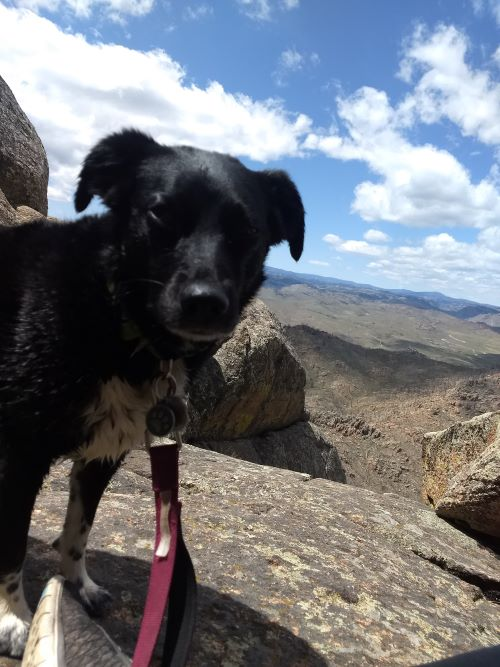

Annie Kay
Home
Resume

Annie's Resume
Experience
Treehouse
• May 2020 ‐ Current
I built an awesome website all about me
Walmart
• May 2019 ‐ May 2020 • Service Desk Associate • Fort Collins, CO
Maintained customer satisfaction while handling product returns quickly and professionally
Performed various money center services to customers such as money orders, paying bills, and sending and receiving money via MoneyGram.
Walmart
• July 2016 ‐ May 2020 • Customer Service Manager • Logan, UT
Completed special projects by using effective decision making, critical thinking and time management skills.
Supervised employees and assessed performances to determine training needs and define accurate plans for decreasing process lags.
Improved customer satisfaction scores through application of superior conflict resolution and problem-solving skills.
Education
2020 Bachelor of Arts in Business Administration
W.P. Carey School of Business
Graduated Summa Cum Laude
Dean's List Spring & Fall 2019
2014 Associate of Sciene in General Studies
Utah State University
Graduated with a 3.8 GPA
Skills
Some things I think I'm pretty great at:
Leadership
Time Management
Cash Handling
Issue Resolution
Scheduling
Planning & Organization